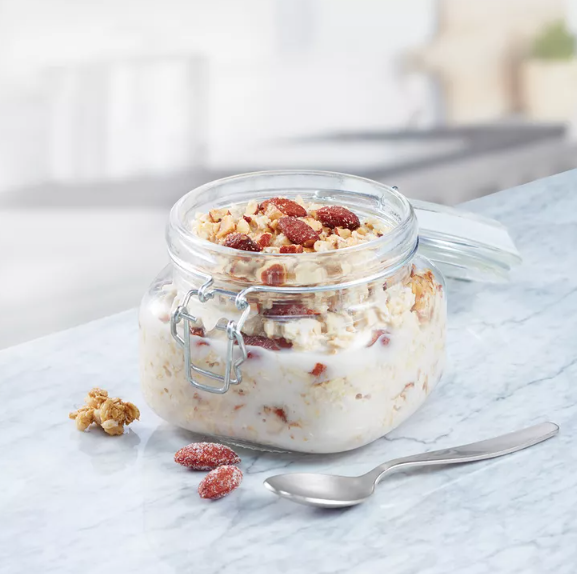

Overnight Oats

Description
Overnight oats is an easy way to preprare a morning breakfast the previous night. All you need is a mug, spoon, and the following ingredients.
Ingredients
- Oats
- Milk
- Greek Yogurt
- Protein Powder (optional)
- Any Fruits and Almonds/Nuts of Your Liking (optional)
Steps
- Pour 1/2 cup of oats into a mug.
- Add 1/2 cup of oats.
- 2/3 cup of greek yogurt.
- Add protein powder (optional).
- Mix it together.
- Seal and keep it in the fridge overnight.
- The next morning, add any fruits and almonds/nuts of your liking.
- Enjoy!